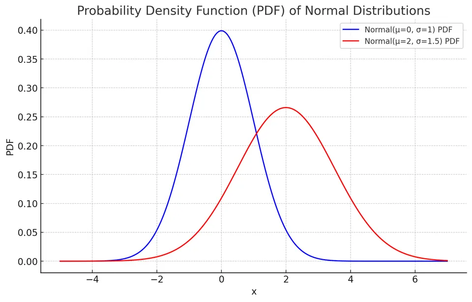
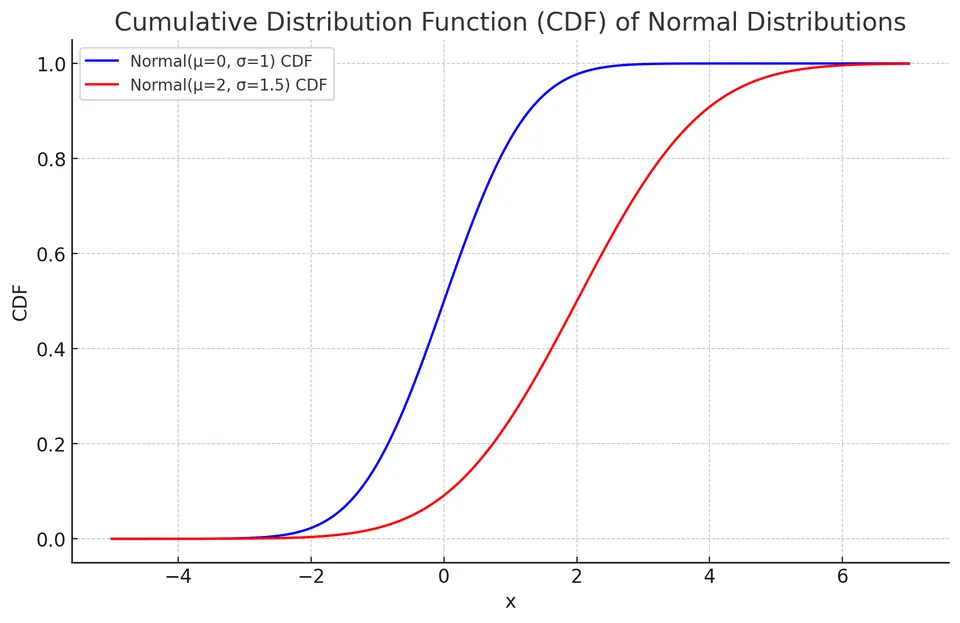

A continuous random variable $X$ follows a normal distribution, denoted as $X \sim \mathcal{N}(\mu,\,\sigma^{2})$, when it has the familiar symmetric bell-shaped density. Its support is the entire real line, so extreme values are possible but receive increasingly small probability in the tails. The normal distribution also appears as an important approximation to standardized sums and sampling distributions through the Central Limit Theorem; under suitable conditions it can approximate distributions such as the binomial.
The PDF of a normal distribution is given by:
$$ f(x) = \frac{1}{\sigma \sqrt{2\pi}} e^{-\frac{(x - \mu)^2}{2\sigma^2}} $$

The CDF of a normal distribution is given by:
$$F(x) = \frac{1}{2} \left[ 1 + \text{erf} \left( \frac{x - \mu}{\sigma \sqrt{2}} \right) \right]$$
where erf is the error function.

The expected value (mean) of a normal distribution is given by:
$$E[X] = \mu$$
To derive the expected value, we integrate the product of the PDF and the variable $x$ over the entire range:
$$E[X] = \int_{-\infty}^{\infty} x \cdot f(x) dx$$
$$E[X] = \int_{-\infty}^{\infty} x \cdot \frac{1}{\sigma \sqrt {2\pi}}e^{-\frac{(x - \mu)^2}{2\sigma^2}} dx$$
Let $u = \frac{x - \mu}{\sqrt{2} \sigma}$, so $x = \mu + \sqrt{2} \sigma u$ and $dx = \sqrt{2}\sigma\,du$. The integral becomes:
$$E[X] = \frac{1}{\sqrt{\pi}} \int_{-\infty}^{\infty} (\mu + \sqrt{2} \sigma u) e^{-u^2} du$$
This integral can be split into two parts:
$$E[X] = \frac{\mu}{\sqrt{\pi}} \int_{-\infty}^{\infty} e^{-u^2} du + \frac{\sqrt{2}\sigma}{\sqrt{\pi}} \int_{-\infty}^{\infty} u e^{-u^2} du$$
The first integral is $\sqrt{\pi}$, and the second is zero because the integrand is odd over a symmetric interval. Therefore,
$$E[X] = \mu.$$
The variance of a normal distribution is given by:
$$\text{Var}(X) = \sigma^2$$
The standard deviation is the square root of the variance:
$$\text{SD}(X) = \sigma$$
The moment generating function (MGF) of a normal distribution is:
$$M_X(t) = E[e^{tX}] = e^{\mu t + \frac{1}{2} \sigma^2 t^2}$$
To find the n-th moment, we take the n-th derivative of the MGF with respect to t and then evaluate it at t=0:
$$E[X^n] = \frac{d^n M_X(t)}{dt^n}\Bigg|_{t=0}$$
$$E[X] = \mu$$
$$E[X^2] = \sigma^2 + \mu^2$$
The empirical rule, also known as the 68-95-99.7 rule, describes the proportion of the probability mass that falls within certain intervals around the mean:
A teacher aims to standardize her class's test scores, which follow a normal distribution. The mean score is 70, with a standard deviation of 10. Consider a student who scored 85.
I. Determining the Student's Z-score:
The z-score formula:
$$ z = \frac{(X - \mu)}{\sigma} $$
where $X$ is the score, $\mu$ is the mean, and $\sigma$ is the standard deviation.
For the student's score:
$$ z = \frac{(85 - 70)}{10} = 1.5 $$
II. Identifying the Corresponding Percentile:
To convert a z-score to a percentile, use a standard normal distribution table or a calculator. A z-score of 1.5 typically aligns with the 93rd percentile, meaning this student's score is higher than approximately 93% of the class.
The normal distribution is a fundamental model in statistics. It is used both as a direct model for approximately symmetric continuous measurements and as an approximation to sampling distributions and other probability models. It underlies many common confidence intervals, hypothesis tests, and regression procedures, but its appropriateness should be justified by the assumptions of the method rather than assumed for every real-valued variable.